Publications
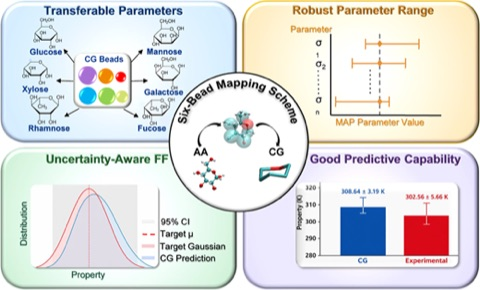
Journal of Chemical Theory and Computation
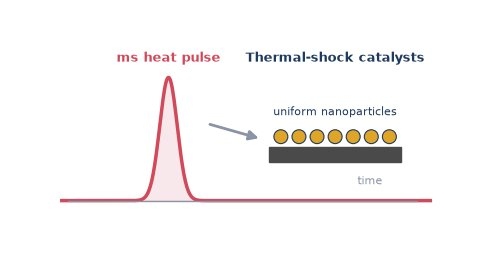
Nature Reviews Materials In press
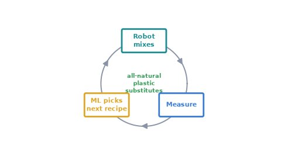
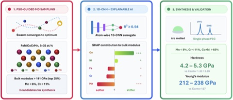
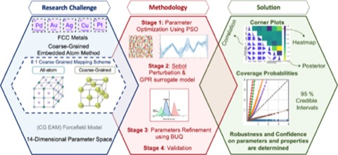
Journal of Chemical Theory and Computation
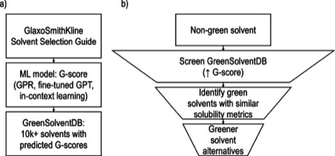
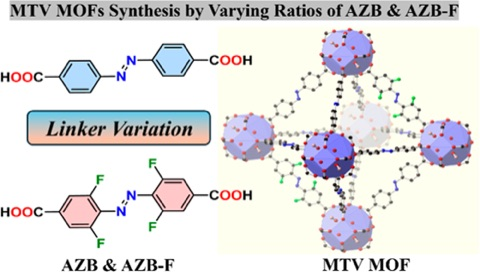
Journal of the American Chemical Society (JACS)
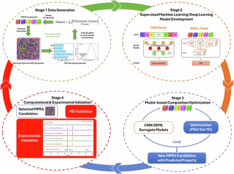
npj Computational Materials
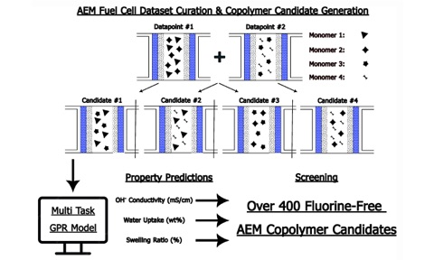
Journal of Materials Informatics
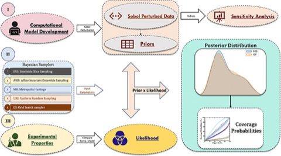
Journal of Chemical Theory and Computation (JCTC)
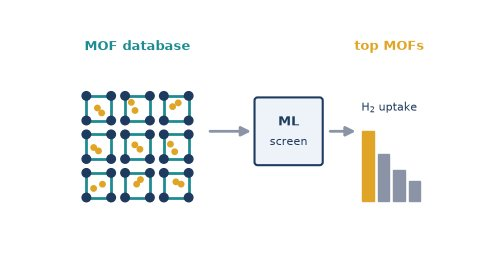
Journal of Chemical Theory and Computation (JCTC)
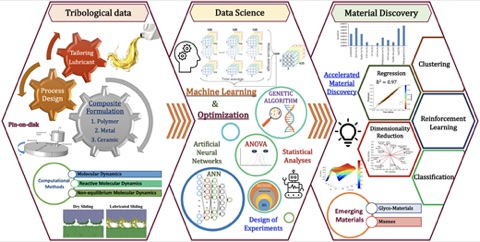
Physical Chemistry Chemical Physics
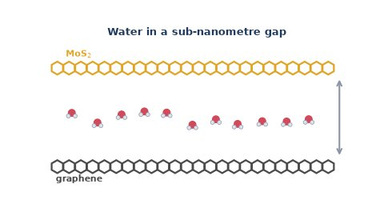
The Journal of Materials Science
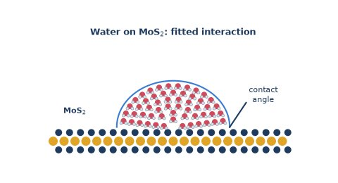
The Journal of Physical Chemistry C
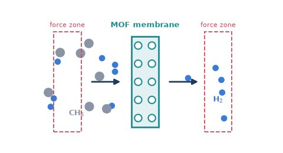
ACS Applied Nanomaterials
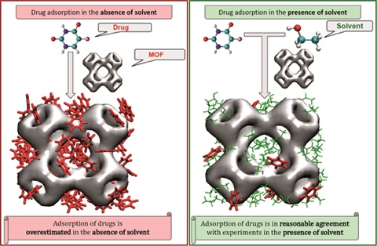
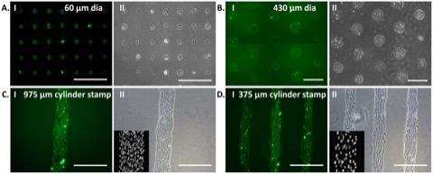
Nature Scientific Reports
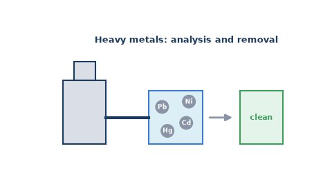
Int. J. Eng. Sci. Res. Technol.
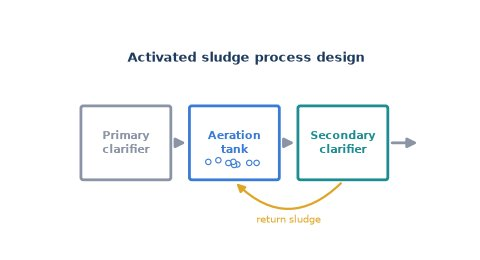
IOSR J. Environmental Science, Toxicology and Food Technology